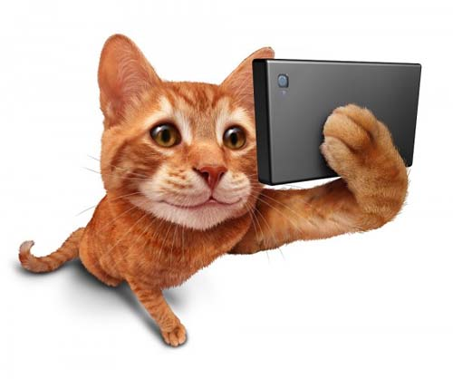

Aplicativos e jogos para tutores de gatos
A tecnologia pode fazer muito pelos gateiros, especialmente quando se trata de aplicativo para celulares: de diversão a administração de consultas veterinárias. Por isso separamos aqui uma lista de apps que vão te ajudar a cuidar melhor dos seus felinos. Confiram!
DoseCat
Para garantir que você vai se lembrar de dar remédios para os seus miaus, o aplicativo te deixa fazer lista de medicamentos, que incluem detalhes como dosagens, fotos, observações especiais e serve também de lembrete. Dessa forma, quando seu gato estiver precisando tomar remédios, esse aplicativo será muito útil. O aplicativo está disponível para iOS e Android.
PetSafe, Pet First Aid
O aplicativo de primeiros socorros para animais de estimação te dá instruções para emergências comuns de acordo com cada problema. Ele é separado em patas e garras, cãibras, ossos quebrados, sangramentos, mordidas e ferimentos internos. Com ele, você vai saber que medidas tomar antes de levá-lo a um veterinário. O Pet First Aid é rico em vídeos, artigos e fotos sobre temas que vão desde o barulho da respiração do seu bichano até qual tipo de alimento ele não pode comer. Disponíveis para iOS e Android.
Pet Manager / Pet Phone / My Pets
Às vezes fica difícil lembrar de todos os procedimentos médicos pelos quais nosso gatinho já passou, não é mesmo? Seria muito mais fácil se ele tivesse um prontuário que pudéssemos carregar por aí. Pois esse aplicativo nos proporciona exatamente isso: ele cria uma ficha completa com todas as informações que você julgar necessárias a respeito do seu bichano — fotos, raça, altura, peso, vacinas tomadas, histórico médico e muito mais! Disponíveis em iOS e Android.
Meu Amigo Gato
O comportamento dos gatos pode ser um mistério para seus donos e para muitos especialistas do mundo animal. Esse aplicativo pretende facilitar a compreensão do comportamento de cerca de 50 raças de bichanos, mostrando os cuidados e hábitos de cada raça. Esse tipo de informação o ajudará a cuidar melhor do seu bichinho ou servirá, até mesmo, para ajudá-lo a escolher qual vai comprar ou adotar. Pode ser adquirido gratuitamente pela plataforma Android.
Tradutor Humano-Gato / Cat Translator Simulator
E se seu gatinho pudesse entender tudo o que você quer dizer a ele? Esse aplicativo, disponível na plataforma Android em versão paga, traduz sua fala para a linguagem de miado. Não é genial? De acordo com o produtor do aplicativo, o software é capaz de compreender todos os idiomas humanos e transformá-los em uma linguagem plenamente compreensível para seu gato.
Pet Acoustics / Sleep Cat Simulator
Animais também gostam de música, sabia? Esse aplicativo promete reproduzir músicas criadas especialmente para seu bichinho de estimação. No caso específico dos gatos, é possível encontrar canções para momentos de relaxamento e de descontração. Curioso, não? Ele se encontra disponível na plataforma iOS mediante pagamento.
Pet Shop Online – Petlove
Nem só de tecnologia vive seu gato, não é mesmo? Mas se você puder usar da comodidade que seu smartphone proporciona para fazer as compras necessárias para seu pet, com certeza seria de grande ajuda. Com o Pet Shop Online – Petlove, você consegue fazer as compras para seu animalzinho. E entregam em casa! E esse serve para gato, cachorro e outros animais de estimação.
Cat Simulator
Tão fofo quanto os outros, Cat Simulator da Turbo Rocket Games é para você que adora tanto gatinhos que gostaria de ter a experiência de ser um. Cat Simulator é um simulador de gato, onde você personaliza seu bichano, dá nome a ele e passa viver as aventuras no dia a dia de um gato em um ambiente online. Existe ainda a opção multiplayer, para você e seus amigos se reunirem e ficarem horas nesse fofo simulador.
iCam
Esse app vai te ajudar a monitorar de forma remota seu companheiro, em tempo real, enquanto estiver longe de casa. O iCam pode ser muito útil quando for viajar e precisar deixar o animalzinho sozinho ou durante o dia a dia, para garantir que tudo vai bem em sua ausência. A desvantagem desse aplicativo é a necessidade de comprar um dispositivo de filmagem. Sem ele não tem como assistir o pet.
Tractive GPS for Dog and Cats
Esse é um app localizador, te permitindo acompanhar seu bichinho em tempo real. Com ele você saberá exatamente onde seu amigo está, te dando paz de espírito e evitando desaparecimentos inesperados. Com o Tractive GPS for Dog and Cats é possível definir uma cerca virtual, chamada de Zona Segura, e toda vez que o animal ultrapassa os limites determinado, você será notificado
Aplicativos e jogos para diversão dos gatos
A seguir serão listados apps desenvolvidos especificamente para uso e diversão dos
bichanos:

Friskies Cat Fishing / Pocket Pond
Uma iniciativa da Nestle Purina PetCare que irá distrair seu gato por horas. O aplicativo baseia-se em pequenos peixinhos nadando na tela do celular, que faz o seu gato perseguir a imagem com os olhos e ao tocar, o peixe desaparece, iniciando um desafio com um novo peixe. Gatos que são caçadores por natureza vão adorar esse app. O aplicativo está disponível para iOS e Android.
Mice catch – Cat game
Deixe seu gato pegar os ratos que aparecem correndo, o que faz eles guincharem e dá pontos. Habilite a opção de foto para tirar uma foto quando seu gato está brincando. É possível alterar o tamanho, velocidade e número de ratos. Em dispositivos mais antigos sugere-se diminuir o tamanho dos ratinhos para melhor qualidade. Gratuito e disponível para Android.
Snap Cat
Este aplicativo permite que os gatos tirem selfies. Um ponto vermelho roda pela tela atraindo a atenção, e quando o gato encosta a pata na tela uma foto é automaticamente tirada e pode ser compartilhada via Facebook ou Twitter. Além do ponto podem ser usados outros atrativos como lasers, ratos e insetos. Gratuito e disponível para iOS e Android.
Magic Piano
Esse app permite que o seu gato faça música, conforme ele vai clicando na tela. Ele não foi criado especialmente para gatos, mas funciona bem para manter o seu bichinho ocupado. Tem de Bruno Mars a Mozart, mas fique atento se o som vai ser entretenimento ou vai estressar seu felino. Gratuito e disponível para iOS e Android.
Ponto de laser para o gato
Um simulador de ponto de luz. A tela mostra um ponto vermelho, como a partir de um caneta de laser, o gato vê e imediatamente tenta pegar com as patas. É possível alterar a cor, o tamanho e a velocidade do ponto de laser. Gratuito e disponível para Android.
Crazy cat
Este aplicativo é para você brincar junto com seu gato. Se você tiver um smartphone com Bluetooth, conecte ao app e controle os bichos que aparecem enquanto seu gato joga. Pressionar a cara do gato louco no controlador rende uma surpresa para o seu gato enquanto ele está brincando. A versão gratuita dá-lhe a funcionalidade completa em troca de assistir periodicamente um anúncio publicitário. Gratuito e disponível para Android.
Game for cats / Free Games for cats / Cat alone
Jogo Multiplayer para gatos e seres humanos. Sim, é possível escolher se o gato joga sozinho, joga contra outro gato ou contra humanos. E tem até a possibilidade de jogar humanos contra humanos. Há fundos animados e sons naturais. Até agora tem mais de 15 brinquedos, e não apenas um rato ou peixe, mas objetos também. Gratuito e disponível para iOS e Android.